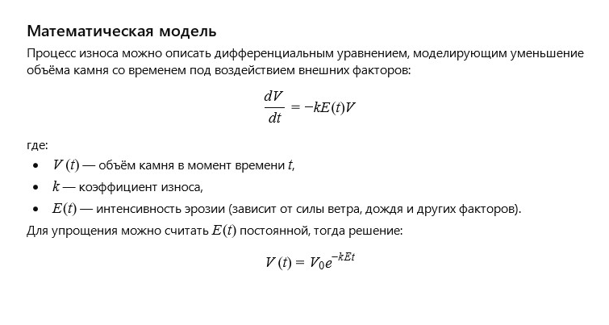

Автор: ІІ
Кам’яна бабуся стояла при вході до старого саду, зберігаючи спогади багатьох поколінь. Її суворе обличчя та міцні руки розповідали історії терпіння та мудрості, а тепле світло заходу сонця лагідно торкалося її кам’яної душі. Вона спостерігала за життям як за безперервним потоком і розуміла, що навіть камені можуть зберігати тепло та надію.
Як можна описати процес поступового зношування та ерозії кам’яної статуї під впливом вітру та дощу за допомогою математичної моделі?
